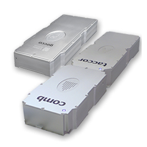

Where to Buy Optical Metrology Equipment
Definition: the science and technology of performing measurements with light
See also our encyclopedia article on optical metrology!
Related products: frequency metrology, distance measurements with lasers
25 suppliers for optical metrology equipment are listed in the RP Photonics Buyer's Guide. Both manufacturers and distributors can be registered.
| Suppliers with Ad Package | |
|---|---|
| Company | Product Description |
 Rua Vasconcelos Costa, 277 4470–640 Maia Portugal |  An improved version of the high-resolution FS22 Industrial BraggMETER DI interrogator for dynamic acquisition rates is now available with the following features: - real sampling rates of operation from 50, 100, 200, and 500 to 1000 S/s - better time synchronization with the integration of the NTP protocol in the interrogator internal processing unit - increased operating temperature ranges from [10 °C to 40 °C] to [0 °C to 50 °C] Fully developed and manufactured in-house using proprietary technology and certified components, the FS22 DI interrogator is now one of the very few interrogators in the market covering at least 100 nm wavelength range and acquisition rates of 1000 S/s. For more information about our best seller acquisition system, click here. |
 Emery Court Stockport, Cheshire SK4 3GL United Kingdom www.laserquantum.com Social: Facebook, LinkedIn, Twitter, YouTube E-mail: Tel.: +44 161 975 5300 Fax: +44 161 975 5309 |  Laser Quantum’s femtosecond lasers for metrology and frequency combs metrology and frequency combs have enabled optical frequency measurements with 20 significant figures, the highest accuracy demonstrated to date. Ultrafast laser offerings include the taccor, a turnkey femtosecond laser with 1 GHz repetition rates and 15 fs pulses, and the gecco, a low maintenance 84 MHz laser. See us at Laser World of Photonics China 2019 in Shanghai, March 20–22 (booth W3.3402) and FOM2019 in London, April 14–17! |
 All wavelengths. Lochhamer Schlag 19 82166 Gräfelfing Germany Quality: ISO 9001:2015 www.toptica.com Social: Facebook, LinkedIn, YouTube E-mail: Tel.: +49 89 85 83 70 Fax: +49 89 85 83 72 00 | TOPTICA offers laser sources for various applications and optical metrology, including time and frequency measurements, tests of fundamental constants and tests of fundamental theories, a term interferometry, laser-based trace gas analysis, and the measurement of smallest magnetic fields. The high precision measurements that are mentioned here require tunable lasers, most of the time with very narrow linewidth and long term stability. In addition, special electronics modules are needed to perform reliable and most advanced laser stabilization. Photonicals – additional laser related accessories – help to characterize or to manipulate the laser light. Many, if not most experiments mentioned here already successfully use our products. TOPTICA Photonics is proud of its company slogan “A passion for precision” which since many years describes very well our internal motivation. |
| Your products are not listed here? Get an ad package! | |
| All Suppliers | |
|---|---|
| From Asia: | |
Imperial Ochanomizu 302 3–11–2 Kanda Ogawamachi, Chiyoda-ku Tokyo 101–0052 Japan | www.optocomb.com/eng Tel.: +81 3 6426 2831 |
| Outside Asia: | |
Sleestraat 3 6014 CA Ittervoort Netherlands | |
Electron Test Equipment Limited Alexandra House Ballsbridge Business Park Dublin 4, D04 C7H2 Ireland | www.electrontest.com Tel.: +353 1 9 02 66 78 |
9925 Carroll Canyon Rd. San Diego, CA 92131 United States | www.gamma-sci.com Tel.: +1 800 637 2758 |
Rua Vasconcelos Costa, 277 4470–640 Maia Portugal | An improved version of the high-resolution FS22 Industrial BraggMETER DI interrogator for dynamic acquisition rates is now available with the following features: - real sampling rates of operation from 50, 100, 200, and 500 to 1000 S/s - better time synchronization with the integration of the NTP protocol in the interrogator internal processing unit - increased operating temperature ranges from [10 °C to 40 °C] to [0 °C to 50 °C] Fully developed and manufactured in-house using proprietary technology and certified components, the FS22 DI interrogator is now one of the very few interrogators in the market covering at least 100 nm wavelength range and acquisition rates of 1000 S/s. For more information about our best seller acquisition system, click here. |
Neumarkter Straße 83 81673 München Germany | |
30 Rocco Drive Scoresby Victoria 3179 Australia | |
Emery Court Stockport, Cheshire SK4 3GL United Kingdom www.laserquantum.com Social: Facebook, LinkedIn, Twitter, YouTube E-mail: Tel.: +44 161 975 5300 Fax: +44 161 975 5309 | Laser Quantum’s femtosecond lasers for metrology and frequency combs metrology and frequency combs have enabled optical frequency measurements with 20 significant figures, the highest accuracy demonstrated to date. Ultrafast laser offerings include the taccor, a turnkey femtosecond laser with 1 GHz repetition rates and 15 fs pulses, and the gecco, a low maintenance 84 MHz laser. |
37 rue Henri Giffard, Z.I. Nord 87280 Limoges France | |
7b Route Suisse 1295 Mies Switzerland | |
 Thiersteinerallee 71 4053 Basel Switzerland | |
 Am Klopferspitz 19a 82152 Martinsried Germany | www.menlosystems.com Social: LinkedIn, YouTube E-mail: Tel.: +49 89 1 89 16 60 Fax: +49 89 1 89 16 61 11 |
Kabelikova 1 750 02 Prerov Czech Republic | |
Rosengarten 10 22880 Wedel Germany | |
107 Audubon Road, Bldg. 3 Wakefield, MA 01880 United States | |
6125 Cottonwood Drive Madison WI 53719 United States | |
Radiant Vision Systems Global HQ 18640 NE 67th Court Redmond, WA 98052 United States | |
3350 Scott Blvd., Bldg. 1 Santa Clara, CA 95054 United States | |
RIO Lasers, an OptaSense business 3350 Scott Blvd., Bldg. 1 Santa Clara, CA 95054 United States | |
Scientific Computing International 6355 Corte Del Abeto Suite C-105 Carlsbad, CA 92011 United States | |
Schuette-Lanz-Strasse 9 26135 Oldenburg Germany | www.smaract.com Tel.: +49 441 – 800 87 90 |
8 Ireton Avenue Leicester LE4 9EU United Kingdom | |
 4946 63rd Street, Suite B Boulder CO 80301 United States | |
515 Lee Road Rochester, NY 14606 United States | |
All wavelengths. Lochhamer Schlag 19 82166 Gräfelfing Germany Quality: ISO 9001:2015 www.toptica.com Social: Facebook, LinkedIn, YouTube E-mail: Tel.: +49 89 85 83 70 Fax: +49 89 85 83 72 00 | TOPTICA offers laser sources for various applications and optical metrology, including time and frequency measurements, tests of fundamental constants and tests of fundamental theories, a term interferometry, laser-based trace gas analysis, and the measurement of smallest magnetic fields. The high precision measurements that are mentioned here require tunable lasers, most of the time with very narrow linewidth and long term stability. In addition, special electronics modules are needed to perform reliable and most advanced laser stabilization. Photonicals – additional laser related accessories – help to characterize or to manipulate the laser light. Many, if not most experiments mentioned here already successfully use our products. TOPTICA Photonics is proud of its company slogan “A passion for precision” which since many years describes very well our internal motivation. |
Click on a company entry to mark it. Product entries of suppliers having an ad package are displayed with a logo, product description and product image. | |
Users: if any displayed information is incorrect (e.g., a listed supplier does not offer such products) or legally problematic, please notify RP Photonics so that the problem can be solved.
Suppliers: you can report modified data using a form, which is provided via the button "Edit profile data" on your company profile page. You can obtain ad package for getting a much improved visibility and many more leads.
If you are a supplier and want to be listed, please use the registration form.
An already registered supplier can use a customized form to report the full list of offered photonics products. That form is reachable with a link at the bottom of the supplier's profile page.
Anyone, not only suppliers themselves, can report additional suppliers. If possible, please provide a web address showing that this supplier indeed offers such products.
If you like this buyer's guide, share it with your friends and colleagues, e.g. via social media: